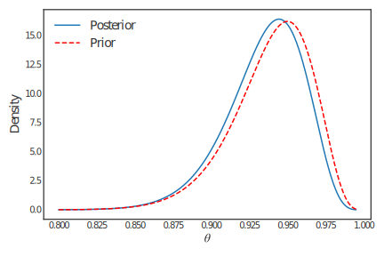
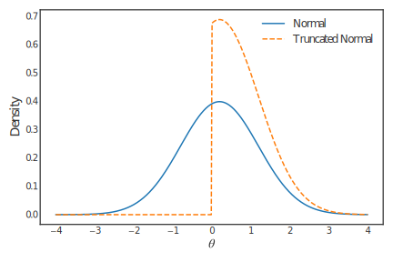
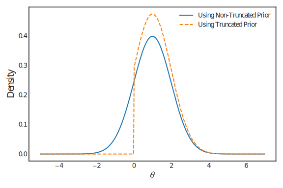
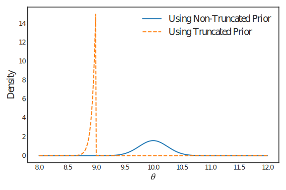

Chapter 3: Priors#
Section 3.1: Introduction#
In this chapter we will consider different approaches about how to construct or choose a suitable prior distribution \(\pi(\theta)\) for our parameter of interest \(\theta\).
For example, why did we use a \(\mathrm{Beta}(77,5)\) distribution for \(\theta\) in the music expert example (page 31)? Why did we use a \(\mathrm{Beta}(2.5,12)\) distribution for \(\theta\) in the example about the video game pirate (page 34)? And why did we assume a \(\mathrm{Gamma}(10,4000)\) distribution for \(\theta\) in the earthquake example (page 37)?
We will consider the case of informative priors, where expert opinion, for example, gives us good reason to believe that some values in a permissible range for \(\theta\) are more likely to occur than others. In particular, we will revisit the examples about the music expert, the video game pirate and earthquakes in Chapter 2.
Of course, sometimes it might be very difficult to properly elicit a prior distribution for \(\theta\). For example, there may be no expert available to help guide your choice of distribution. In this case, the chosen prior distribution \(\pi(\theta)\) might be one which keeps the mathematics simple when operating Bayes Theorem, whilst also assuming a large or “infinite” variance for \(\theta\) (vague prior knowledge). Alternatively, a prior which assumes all values of \(\theta\) are equally likely could be used to represent complete prior ignorance, as in the example about the possibly biased coin (Example 2.1, page 28).
In this chapter we will also consider the construction of priors for \(\theta\) under certain parameter constraints, including the construction of truncated priors.
Section 3.2: Informative Priors#
Definition 3.1: Informative Prior#
We have substantial prior information for \(\theta\) when the prior
distribution dominates the posterior distribution, that is
\(\pi(\theta|\underline{x})\sim\pi(\theta)\).

An example of an informative prior was given in Example where a music expert was trying to distinguish between pages from Mozart and Haydn scores. Figure shows the prior and posterior distributions for \(\theta\), the probability that the expert makes the correct choice. Notice the similarity between the prior and posterior distributions. Observing the data has not altered our beliefs about \(\theta\) very much.
When we have prior information there can be some difficulties:
The practical formulation of the prior distribution from expert opinions — coherently specifying prior beliefs in the form of a probability distribution is far from straightforward. This is known as prior elicitation.
The intractability of the mathematics in deriving the posterior distribution — though with modern computing facilities this is less of a problem,
In the following two examples, we consider the specification of informative priors from information provided by experts. These are examples of prior elicitation.
Example 3.1#
Let us return to Example of Chapter 2. Recall that we were given some
data on the “waiting times”, in days, between 21 earthquakes, and we
discussed why an exponential distribution \(\mathrm{Exp}(\theta)\) might
be appropriate to model the waiting times. Further, we were told that an
expert on earthquakes has prior beliefs about the rate \(\theta\),
described by a \(\mathrm{Gamma}(10,4000)\) distribution; a plot of this
prior is shown in Figure . Where did this prior distribution come from?
Suppose the expert tells us that earthquakes in the region we are interested in usually occur less than once per year; in fact, they occur on average once every 400 days. This gives us a rate of occurrence of about 1/400 = 0.0025 per day (to match the “daily” units given above). Further, he is fairly certain about this and specifies a very small variance of \(6.25 \times 10^{-7}\).
A \(\mathrm{Gamma}(a,b)\) distribution seems sensible, since we can’t observe a negative daily earthquake rate and the Gamma distribution is specified over positive values only. Using the information provided by the expert, verify our use of \(a=10\) and \(b=4000\).
Solution
Recall that if \(\theta \sim \mathrm{Gamma}(a,b)\), then
From the prior information supplied by the expert, we must have \(\text{E}[\theta] = 2.5\times 10^{-3}\) and \(\text{Var}[\theta] = 6.25\times 10^{-7}\). This yields a simultaneous equation in \(a\) and \(b\):
Setting these two equations equal yields a quadratic equation in \(b\). Since \(b > 0\), we are allowed to divide both sides by \(b\):
Therefore, \(a = 2.5\times 10^{-3} \times 4000 = 10\).
So, the prior information provided by the expert is quantified correctly by
as required.
Example 3.2#
Now let us return to Example of Chapter 2. We considered an experiment
to determine how good a music expert is at distinguishing between pages
from Haydn and Mozart scores; when presented with a score from each
composer, the expert makes the correct choice with probability \(\theta\).
Before conducting the experiment, we were told that the expert is very competent; in fact, we were told that \(\theta\) should have a prior distribution peaking at around 0.95 and for which \(\text{Pr}(\theta<0.8)\) is very small. To achieve this, we assumed that \(\theta \sim \mathrm{Beta}(77,5)\), with density given in Figure 2.4. How did we know a beta distribution would be appropriate? And how did we figure out the parameters of this distribution, i.e. \(a=77\) and \(b=5\)?
By now, you should understand why we might work with a beta distribution: in this example, \(\theta\) is a probability and so must lie in the interval \([0,1]\), and a beta distribution is defined over this range. But how did we know that \(a=77\) and \(b=5\) would give the desired properties for \(\theta\)?
We are told that the mode of the distribution should be around 0.95; using the formulae on page 25, we can thus write
We are also told that \(\text{Pr}(\theta<0.8)\) must be small. In fact, suppose we are told that \(\theta<0.8\) might occur with probability 0.0001. This means that if we integrate the probability density function for our beta distribution between 0 and 0.8, we would get 0.0001; from Equation (2.1) on page 25, we can write this as
Now, setting \(a = 19b-18\):
We have set the cumulative distribution function for a
\(\mathrm{Beta}(19b-18,b)\) random variable, evaluated at 0.8, equal to
0.0001 and solve for \(b\). Although this would be rather tricky to do by
hand, we can do this quite easily in R. Recall that the R command
dbeta(x,a,b) evaluates the density of the \(\mathrm{Beta}(a,b)\)
distribution at the point x (see page 25); the command pbeta(x,a,b)
evaluates the corresponding cumulative distribution function at x.
First of all, we re–write (3.3) to set it equal to zero:
We then write a function in R which computes the left-hand-side of
Equation (3.4):
f = function(b) {
output = pbeta(0.8, 19 * b - 18, b) - 0.0001
return(output)
}
The trick now is to use a numerical procedure to find the root of
answer in the R function above, i.e. find the value b which
equates answer to zero (as is required in Equation (3.4). We can do
this using the R function uniroot(f, lower=, upper=), which uses a
numerical search algorithm to find the root of the expression provided
by the function f, having been given a lower bound and an upper
bound to search within. We know from the formulae on page 25 that
\(a,b>1\) when using expression (3.1) for the mode, so we can search for a
root over some specified domain \(>1\): for example, we might use
lower=1 and upper=100, giving:
uniroot(f, lower=1, upper=100)
$root [1] 5.06513 $f.root
[1] 6.008134e-09
$iter [1] 14 $estim.prec
[1] 6.103516e-05
Thus, the solution to Equation (3.3) is \(b=5.06513\). For simplicity, rounding down to \(b=5\) and then substituting into (3.2) gives
hence the use of \(\theta \sim \mathrm{Beta}(77,5)\) in Example in Chapter 2.
There are many more advanced approaches of prior elicitation and it is still an active area of research.
Section 3.3: Parameter constraints#
Many probability models have constraints on their parameters. For example, if we are interested in the variance \(\sigma^2\) of independent normally distributed data
then we must necessarily have \(\sigma^2 > 0\). This is an example of a parameter constraint. Other examples include the \(a,b > 0\) parameters that are used in the \(\mathrm{Gamma}(a,b)\) distribution, or the parameter \(p\) used in the \(\mathrm{Binomial}(n,p)\) distribution.
In order to perform Bayesian inference on parameters which are constrained, we need to specify prior distributions which place zero probability on the regions for which the parameter can’t take.
A general approach to define priors which satisfy such constraints is by using truncated distributions.
Definition 3.2: Truncated Distribution#
Consider a univariate continuous distribution with density
\(\pi(\theta)\). Then this distribution truncated to the interval
\([a,b]\) has density:
where \(k = \int_a^b \pi(\theta) d\theta\).
Notes:
For one-side constraints, for example \(\theta \geq 1\), we can take \(a=-\infty\) or \(b=\infty\).
Strict inequalities such as \(\theta>1\) can be treated in exactly the same way as non-strict inequalities such as \(\theta \geq 1\) (this is because \(\theta\) is a continuous random variable).
For Bayesian analysis we usually don’t need to actually calculate \(k\), as we can simply use:
Example 3.3#
Suppose \(\theta \sim \mathcal{N}(b,d^2)\). Find the density of the
truncated distribution for \(\theta>0\).
Solution
From the definition of a truncated distribution, we have, for \(\theta >0\):
where \(k = \int_0^\infty \pi(\theta).\) Note that
Here, \(Z \sim \mathcal{N}(0,1)\) and \(\Phi(z) = \text{Pr}(Z < z)\) is the cdf of \(Z\). Therefore, for \(\theta > 0\):
Figure shows a plot of the densities of (a) a \(\mathcal{N}(1,1)\) distribution and (b) a \(\mathcal{N}(1,1)\) distribution truncated to \(\theta>0\). Notice that for \(\theta>0\) the truncated normal’s density has the same shape as that of the original distribution. However the truncated density takes proportionately larger values, since both curves must have an area underneath of one. Also, we can see that the mean of the truncated distribution will be larger than the mean of the original distribution and the standard deviation will be smaller.
This is an important general point. Truncating a distribution changes the mean and variance. Calculating the new values can be difficult.

Bayesian Inference with Truncated Priors#
Suppose we can do a Bayesian analysis for an ordinary prior. Then it’s easy to do the analysis for a truncated version of this prior by the following theorem.
Theorem 3.1: Truncated Posterior#
Suppose that for a prior \(\pi(\theta)\) the resulting posterior is
\(\pi(\theta | \underline{x})\). Let \(\pi_T(\theta)\) be the result of
truncating the prior to \([a,b]\). Then the corresponding posterior is
\(\pi(\theta | \underline{x})\) truncated to \([a,b]\).
Proof#
Theorem Let \(\pi'(\theta | \underline{x})\) be the posterior for the truncated prior. Then:
This result makes it easy to do Bayesian analysis under parameter constraints.
Example 3.4#
Consider again the case of \(X_i|\theta\sim \mathcal{N}(\theta,h^2)\),
\(i=1,2,\ldots,n\) (independent) and \(\theta\sim \mathcal{N}(b,d^2)\), with
\(h\) known. Suppose we knew in advance that the experiment could only
result in positive values for \(\theta\). Find the posterior distribution
for \(\theta\).
Solution
From the previous theorem, we first compute the posterior distribution using the non-truncated prior and then we can truncate the posterior. Recall from Example 2.7 that if we use a non-truncated prior \(\theta \sim\mathcal{N}(b,d^2)\), we have:
where
The posterior using the truncated prior thus has density, for \(\theta > 0\):
Figure plots the \(\mathcal{N}(1,1)\) posterior densities using the original and truncated priors. This plot highlights an important consequence of using truncated distributions for modelling prior beliefs, namely, that if particular parameter values are ruled out prior to seeing the data then they are also ruled out after seeing the data. Normally, this is not a problem but, as the following example shows, when the truncation in a prior distribution does not include parameter values for which the likelihood function is large, misleading conclusions can be made.

Example 3.5#
Consider the case of a large random sample (\(n=1500\)) with sample mean
\(\bar x=157/15\simeq 10.47\) from a normal distribution with known
variance (\(h^2=100\)) and a normal \(\mathcal{N}(3,1)\) prior distribution
for the mean parameter \(\theta\). The prior probability that \(\theta\)
exceeds 9 is almost zero: \(\text{Pr}(\theta>9)\simeq 10^{-9}\). So what
is the effect of using a prior distribution which rules out the
extremely unlikely values of \(\theta\) greater than 9? Put another way,
is there much difference between the posterior distributions calculated
using the prior with \(\text{Pr}(\theta>9)\simeq 10^{-9}\) or a truncated
version of the prior with \(\text{Pr}(\theta>9)=0\)?
If no truncation is applied to the prior distribution then Bayes Theorem produces the posterior distribution \(\theta|\underline{x}\sim \mathcal{N}(10,0.25^2)\). The discussion preceding this example tells us that imposing the truncation \(\theta<9\) on the prior distribution produces a posterior distribution which is a \(\mathcal{N}(10,0.25^2)\) distribution, truncated to \(\theta<9\). Figure shows the resulting posterior densities. Clearly, truncating the prior distribution to \(\theta<9\) has resulted in a posterior distribution truncated to \(\theta<9\), even though the likelihood function is very peaked at \(\theta\simeq 10.47\). So our prior has ruled out the most likely values according to the data! Using a prior distribution which gives very small – but non-zero – probability to values of \(\theta>9\), avoids this problem.

This example motivates the pragmatic rule: never rule out values for parameters which are very implausible but not impossible. Instead these parameter values should be given very small probability density. The data will then be allowed to inform the posterior distribution about values of \(\theta\) with very low prior probability (density) but with very high likelihood.
“If a decision-maker thinks something cannot be true and interprets this to mean it has zero probability, he will never be influenced by any data, which is surely absurd. So leave a little probability for the moon being made of green cheese; it can be as small as 1 in a million, but have it there since otherwise an army of astronauts returning with samples of the said cheese will leave you unmoved” – Dennis Lindley
Section 3.4: Uninformative Priors#
If we have very little or no prior information about the model parameters \(\theta\), we must still choose a prior distribution in order to operate Bayes Theorem. Obviously, it would be sensible to choose a prior distribution which is not concentrated about any particular value, that is, one with a very large variance. In particular, most of the information about \(\theta\) will be passed through to the posterior distribution via the data, and so we have \(\pi(\theta|\underline{x})\sim f(\underline{x}|\theta)\).
An example of vague prior knowledge was given in Example where a possibly biased coin was assessed. Figure shows the prior and posterior distributions for \(\theta=\text{Pr(Head)}\). Notice that the prior and posterior distributions look very different. In fact, in this example, the posterior distribution is simply a scaled version of the likelihood function – likelihood functions are not usually proper probability (density) functions and so scaling is required to ensure that it integrates to one. Most of our beliefs about \(\theta\) have come from observing the data.

Vague Prior Knowledge#
We represent vague prior knowledge by using a prior distribution which is conjugate to the model for \(\underline{x}\) and which has “infinite” variance.
Example 3.6#
Suppose we have a random sample from a \(\mathcal{N}(\mu,1/\tau)\)
distribution (with \(\tau\) known). Determine the posterior distribution
assuming a vague prior for \(\mu\).
Solution
The conjugate prior distribution is a normal distribution. We have already seen that if the prior is \(\mu\sim \mathcal{N}(b,1/d)\) then the posterior distribution is \(\mu|\underline{x}\sim \mathcal{N}(B,1/D)\) where
If we now make our prior knowledge vague about \(\mu\) by letting the prior variance tend to infinity (\(d\to 0\)), we obtain
Therefore, assuming vague prior knowledge for \(\mu\) results in a \(\mathcal{N}(\bar x,1/(n\tau))\) posterior distribution. Notice that the posterior mean is the sample mean (the likelihood mode) and that the posterior variance \(1/D\to 0\) as \(n\to\infty\).
Example 3.7#
Suppose we have a random sample from an exponential distribution, that
is, \(X_i|\theta\sim \mathrm{Exp}(\theta)\), \(i=1,2,\ldots,n\)
(independent). Determine the posterior distribution assuming a vague
prior for \(\theta\).
Solution
The conjugate prior distribution is a Gamma distribution. Recall that a \(\mathrm{Gamma}(g,h)\) distribution has mean \(m=g/h\) and variance \(v=g/h^2\). Rearranging these formulae we obtain
Clearly \(g\to 0\) and \(h\to 0\) as \(v\to\infty\) (for fixed \(m\)). We have seen how taking a \(\mathrm{Gamma}(g,h)\) prior distribution results in a \(\mathrm{Gamma}(g+n,h+n\bar x)\) posterior distribution. Therefore, taking a vague prior distribution will give a \(\mathrm{Gamma}(n,n\bar x)\) posterior distribution.
Note that the posterior mean is \(1/\bar x\) (the likelihood mode) and that the posterior variance \(1/(n\bar x^2)\to 0\) and \(n\to\infty\).
Prior Ignorance#
We could represent ignorance by the concept “all values of \(\theta\) are equally likely”. If \(\theta\) were discrete with \(m\) possible values then we could assign each value the same probability \(1/m\). However, if \(\theta\) is continuous, we need some limiting argument (from the discrete case). Suppose that \(\theta\) can take values between \(a\) and \(b\), where \(-\infty<a<b<\infty\). Letting all (permitted) values of \(\theta\) be equally likely results in taking a uniform \(U(a,b)\) distribution as our prior distribution for \(\theta\). However, if the parameter space is not finite then we cannot do this: there is no such thing as a \(U(-\infty,\infty)\) distribution. Convention suggests that we should use the “improper” uniform prior distribution
This distribution is improper because \(\int_{-\infty}^\infty \pi(\theta)\,d\theta\) is not a convergent integral, let alone equal to one. We have a similar problem if \(\theta\) takes positive values — we cannot use a \(U(0,\infty)\) prior distribution. Now if \(\theta\in (0,\infty)\) then \(\phi=\log\theta\in (-\infty,\infty)\), and so we could use an “improper” uniform prior for \(\phi\): \(\pi(\phi)=constant\). In turn, this induces a distribution on \(\theta\). Recall the result from Distribution Theory:
Suppose that \(X\) is a random variable with probability density function \(f_X(x)\). If \(g\) is a bijective (1–1) function then the random variable \(Y=g(X)\) has probability density function
Applying this result to \(\theta=e^\phi\) gives
This too is an improper distribution.
There is a drawback of using uniform or improper priors to represent prior ignorance: if we are “ignorant” about \(\theta\) then we are also “ignorant” about any function of \(\theta\), for example, about \(\phi_1=\theta^3\), \(\phi_2=e^\theta\), \(\phi_3=1/\theta\), … . Is it possible to choose a distribution where we are ignorant about all these functions of \(\theta\)? If not, on which function of \(\theta\) should we place the uniform/improper prior distribution? After a little thought, it should be clear that there is no distribution which can represent ignorance for all functions of \(\theta\). The above example shows that assigning a uniform/ignorance prior to \(\theta\) means that we do not have a uniform/ignorance prior for \(e^\theta\).
A solution to problems of this type was suggested by Sir Harold Jeffreys. His suggestion was specified in terms of Fisher’s Information:
He recommended that we represent prior ignorance by the prior distribution
Such a prior distribution is known as a Jeffreys prior distribution.
Example 3.8#
Suppose we have a random sample from a distribution with probability
density function
Determine the Jeffreys prior for this model.
Solution
The likelihood function is
Therefore, the log-likelihood function is
The derivatives are:
The Fisher information is then
Solution
Therefore
Hence, the Jeffreys prior for this model is
Notice that this distribution is improper since \(\int_0^\infty d\theta/\theta\) is a divergent integral, and so we cannot find a constant which ensures that the density function integrates to one.
Example 3.9#
Suppose we have a random sample from an exponential distribution, that
is, \(X_i|\theta\sim \mathrm{Exp}(\theta)\), \(i=1,2,\ldots,n\)
(independent). Determine the Jeffreys prior for this model.
Solution
Recall that the likelihood function is \(f_{\underline{X}}(\underline{x}|\theta)=\theta^n e^{-n\bar x\theta}\), and therefore
Hence, the Jeffreys prior for this model is
Notice that this distribution is improper since \(\int_0^\infty d\theta/\theta\) is a divergent integral, and so we cannot find a constant which ensures that the density function integrates to one.
Notice also that this density is, in fact, a limiting form of a \(\mathrm{Gamma}(g,h)\) density (ignoring the integration constant) since
Therefore, we obtain the same posterior distribution whether we adopt the Jeffreys prior or vague prior knowledge.
Example 3.10#
Suppose we have a random sample from a \(\mathcal{N}(\mu,1/\tau)\)
distribution (with \(\tau\) known). Determine the Jeffreys prior for this
model.
Solution
Recall that the likelihood function is
and therefore
Hence, the Jeffreys prior for this model is
Notice that this distribution is improper since \(\int_{-\infty}^\infty d\mu\) is a divergent integral, and so we cannot find a constant which ensures that the density function integrates to one.
Also it is a limiting form of a \(\mathcal{N}(b,1/d)\) density (ignoring the integration constant) since
Therefore, we obtain the same posterior distribution whether we adopt the Jeffreys prior or vague prior knowledge.
As discussed at the beginning of this section on prior ignorance, Jeffrey’s prior is invariant to reparameterisation. The following example demonstrates an instance of this:
Example 3.11#
Recall that, from Example 3.9, the Jeffreys prior for the model
is
Suppose we instead reparameterised our model and instead used the parameter \(\phi = \log \theta\). First, using Jeffrey’s prior for \(\theta\) compute the density of the transformed random variable \(\phi = \log\theta\).
Finally, compute Jeffrey’s prior using \(\phi\) as the parameter, where each \(X_i|\phi \sim \mathrm{Exp}(e^{\phi})\).
Solution
Recall the change of variable formula: If \(\theta\) is a random variable and \(\phi = g(\theta)\) for a bijective and differentiable function \(g\), then
We have \(g(\theta) = \log\theta\) and so \(g^{-1}(\phi) = e^{\phi}\) and \(\frac{\partial}{\partial\phi} \left(e^{\phi}\right) = e^{\phi}.\) Therefore, the density of \(\phi = \log \theta\) is
The likelihood function of the model \(X_i|\phi \sim \mathrm{Exp}(e^{\phi}), \quad i=1,\ldots,n\) is
We have \(\log f(\underline{x}|\phi) = n\phi - n\bar{x}e^{\phi}.\) The second derivative with respect to \(\phi\) is
Therefore, Fishers information is
Note that
and so \(I(\phi) = n e^{-\phi} e^{\phi} = n\). Therefore, Jeffreys prior is \(\pi(\phi) \propto \sqrt{I(\phi)} = 1\).
Section 3.5: Asymptotic posterior distribution#
There are many limiting results in Statistics. The one you will probably remember is the Central Limit Theorem. This concerns the distribution of \(\bar X_n\), the mean of \(n\) independent and identically distributed random variables (each with known mean \(\mu\) and known variance \(\sigma^2\)), as the sample size \(n\to\infty\). It is easy to show that \(\text{E}[\bar X_n]=\mu\) and \(\text{Var}[\bar X_n]=\sigma^2/n\), and so
These two equations are true for all values of \(n\). The important part of the Central Limit Theorem is the description of the distribution of \(\sqrt{n}(\bar{X}_{n}-\mu)/\sigma\) as \(n \to \infty\):
The following theorem gives a similar result for the posterior distribution.
Theorem 3.2: Asymptotic posterior#
Suppose we have a statistical model \(f(\underline{x}|\theta)\) for data
\(\underline{x} = (x_1, \ldots, x_n)^\top\), together with a prior
distribution \(\pi(\theta)\) for \(\theta\). Then
where \(\hat{\theta}\) is the likelihood mode and \(J(\theta)\) is the observed information:
Proof#
Theorem Using Bayes Theorem, the posterior distribution for \(\theta\) is
Let \(\psi=\sqrt{n}(\theta-\hat\theta)\) and
be the average log-likelihood per observation, in which case, \(f(\underline{x}|\theta)=e^{n\ell_n(\theta)}\). Using , the posterior distribution of \(\psi\) is
Now taking Taylor series expansions about \(\psi=0\) gives
since \(\ell_n'(\hat\theta)=0\) by definition of the maximum likelihood estimate. Therefore, retaining only terms in \(\psi\), we have
Hence
Thus, the limiting form of the posterior density for \(\psi\) is that of a \(\mathcal{N}\left(0,[-\ell_n''(\hat\theta)]^{-1}\right)\) distribution. Hence
or, equivalently, since $n\ell_n(\theta)=\log f(\underline{x}|\theta)
as required.
Comments#
Example 3.12#
Suppose we have a random sample from a distribution with probability density function
Determine the asymptotic posterior distribution for \(\theta\). Note that from Example we have
Solution
Write \(\overline{x^2}=\dfrac{1}{n}\displaystyle\sum_{i=1}^n x_i^2\) then we have
Therefore, for large \(n\), the (approximate) posterior distribution for \(\theta\) is
Example 3.13#
Suppose we have a random sample from an exponential distribution, that is, \(X_i|\theta\sim \mathrm{Exp}(\theta)\), \(i=1,2,\ldots,n\) (independent). Determine the asymptotic posterior distribution for \(\theta\). Note that from Example we have
Solution
We have
Therefore, for large \(n\), the (approximate) posterior distribution for \(\theta\) is
Recall that, assuming a vague prior distribution, the posterior distribution is a \(\mathrm{Gamma}(n,n\bar x)\) distribution, with mean \(1/\bar x\) and variance \(1/(n\bar x^2)\). The Central Limit Theorem tells us that, for large \(n\), the gamma distribution tends to a normal distribution, matched, of course, for mean and variance. Therefore, we have shown that, for large \(n\), the asymptotic posterior distribution is the same as the posterior distribution under vague prior knowledge. Not a surprising result!
Example 3.14#
Suppose we have a random sample from a \(\mathcal{N}(\mu,1/\tau)\) distribution (with \(\tau\) known). Determine the asymptotic posterior distribution for \(\mu\). Note that from Example we have
Solution
We have
Therefore, for large \(n\), the (approximate) posterior distribution for \(\mu\) is
Again, we have shown that the asymptotic posterior distribution is the same as the posterior distribution under vague prior knowledge.